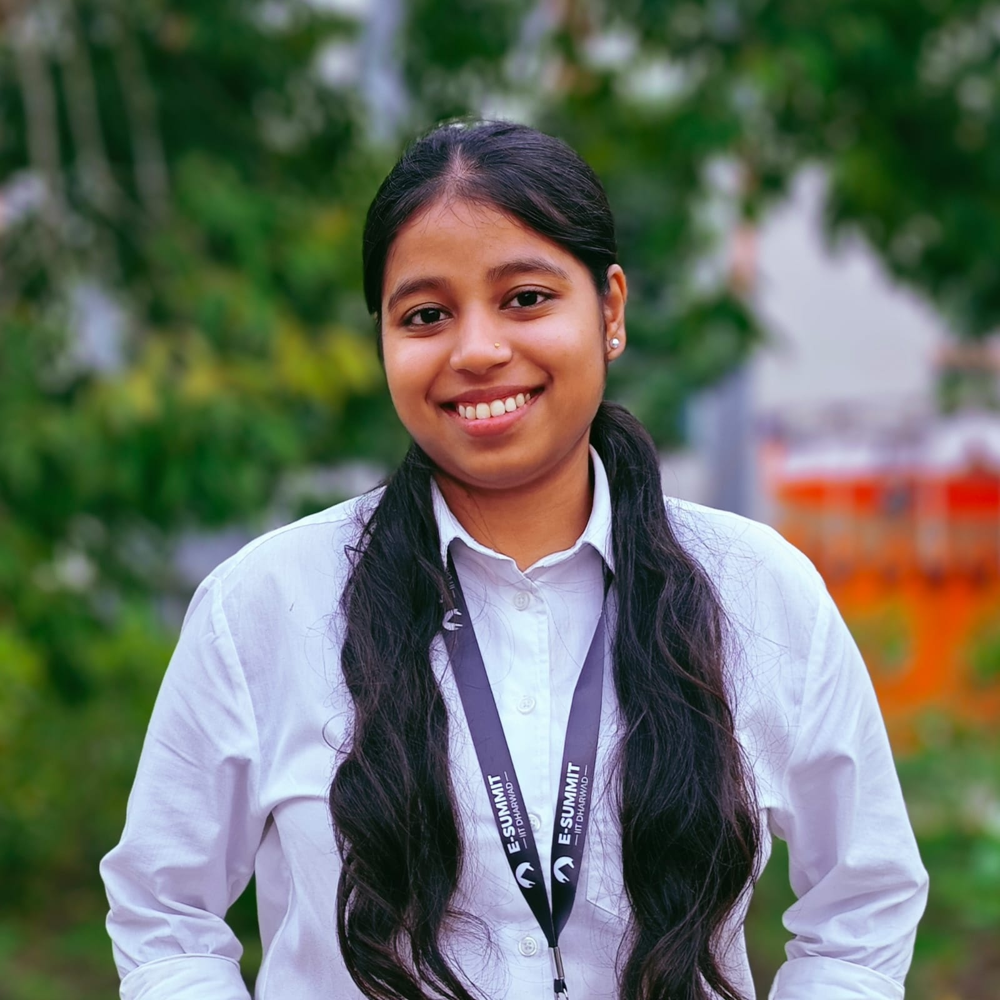
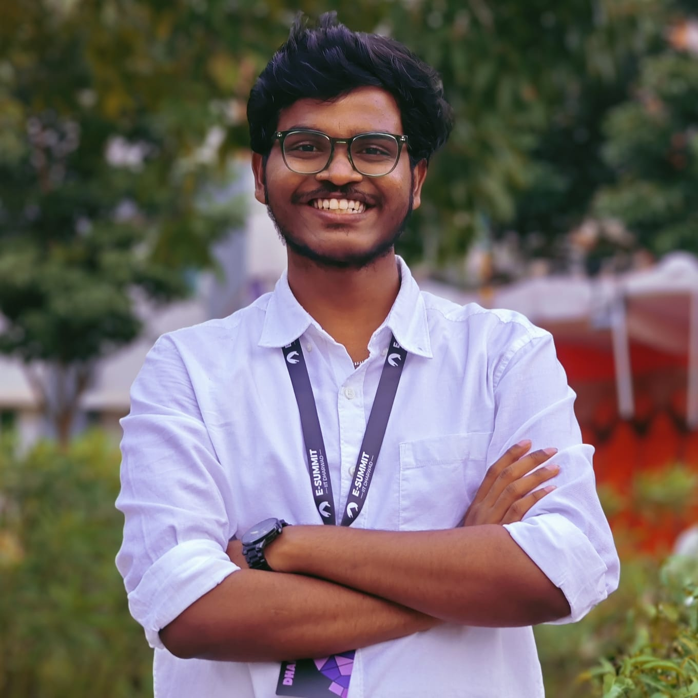
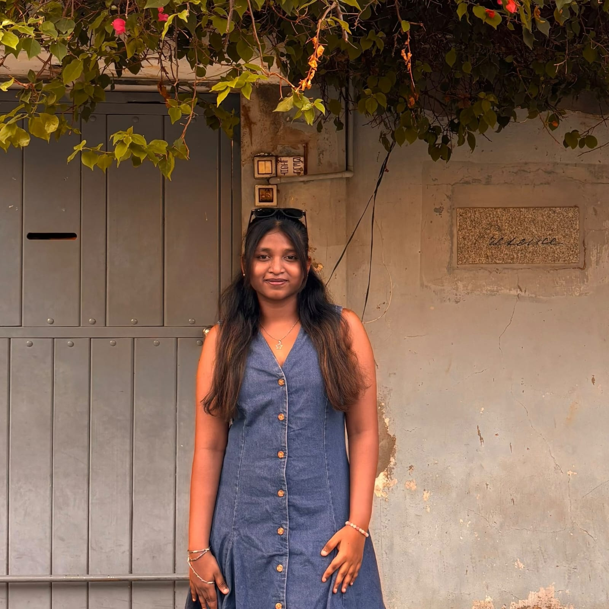

Anjali Kumari
Project Lead • 3rd Year B.Tech, IIT Dharwad
Led the overall project and fine-tuned the BERT Transformer for binary classification (94.16% accuracy) and continuous rating regression (0.9897 MAE). Handled task coordination, repository management, and report compilation.

Tangirala Dhanunjaya Rao
Team Member • 3rd Year B.Tech, IIT Dharwad
Built and trained the 2-layer Bidirectional LSTM in PyTorch for classification (87.78% accuracy) and the continuous LSTM regressor (1.5477 MAE). Analyzed prediction residuals and built the project website.

Paripelly Pritika
Team Member • 3rd Year B.Tech, IIT Dharwad
Wrote Python extraction scripts to parse all 100,000 reviews from the raw IMDB directories. Cleaned the text by removing HTML <br /> tags, unescaping characters, normalizing whitespace, and removing duplicate reviews. Generated the EDA distribution plots.

Sucharitha Kamera
Team Member • 3rd Year B.Tech, IIT Dharwad
Implemented and benchmarked baseline ML models: Multinomial Naive Bayes (84.20% accuracy) and Logistic Regression with TF-IDF unigrams and bigrams (88.22% accuracy). Evaluated how bigrams capture localized negation like “not good”.

Harshith Konda
Team Member • 3rd Year B.Tech, IIT Dharwad
Handled the unsupervised learning and dimensionality reduction tasks. Reduced TF-IDF features to 2 components using Truncated SVD for 2D plotting. Implemented K-Means clustering (confirming K=2 with the elbow curve) and tested Gaussian Mixture Models (GMM) for soft clustering on mixed reviews.